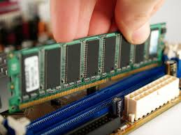

La RAM (Random Access Memory) est une mémoire électronique rapide, volatile, qui sert à stocker temporairement les données dont le processeur a besoin pendant l’exécution des programmes.Elle permet d’accéder à n’importe quelle donnée en un temps quasi identique, peu importe son emplacement.

Ou peut-on la retrouver ?
Dans un PC fixe (tour)
La RAM se présente sous forme de barrettes (DIMM) que l’on insère dans les slots mémoire de la carte mère. Ces slots sont généralement proches du processeur, souvent 2 ou 4, parfois 8 sur les cartes mères haut de gamme.
Dans un ordinateur portable
La RAM peut être :
Amovible : petites barrettes SODIMM accessibles via une trappe ou en retirant le capot.
Soudée (LPDDR) : impossible à remplacer, très courant sur les ultrabooks modernes.
Dans les serveurs
On y trouve des barrettes ECC (Error‑Correcting Code), capables de détecter et corriger certaines erreurs mémoire. Elles sont essentielles pour la fiabilité.
Les débuts (années 1930–1950)
Avant la RAM moderne, les ordinateurs utilisaient :
Tambours magnétiques (drum memory) inventés en 1932.
Lignes à retard (mercury delay lines) et autres systèmes mécaniques ou électromagnétiques.
1947 : la première vraie RAM électronique
Le tube Williams‑Kilburn, testé en 1947, est considéré comme la première mémoire entièrement électronique à accès aléatoire.Il stockait les bits sous forme de points lumineux sur un écran cathodique.
Années 1950–1970 : l’ère de la mémoire à tores magnétiques
En 1952, Jay Forrester invente la mémoire à tores magnétiques : de petits anneaux de ferrite qui stockent un bit selon leur polarité.
Ultra fiable
Non volatile
Utilisée dans 95 % des ordinateurs jusqu’en 1976
C’est la première mémoire vraiment pratique et dominante.
Années 1970 : naissance de la RAM moderne
Avec l’arrivée des transistors et des circuits intégrés, la mémoire devient :
plus petite
plus rapide
moins chère
C’est là que naissent :
SRAM (Static RAM)
DRAM (Dynamic RAM), qui deviendra le standard
Années 1990–2020 : l’évolution des DRAM
La DRAM évolue en plusieurs générations :
SDRAM
DDR (Double Data Rate)
DDR2, DDR3, DDR4, DDR5
Les types de RAM d'aujourd’hui
SRAM (Static RAM)
ultra rapide
Utilisée dans les caches processeur (L1, L2, L3)
Non remplaçable par l’utilisateur
Très chère
DRAM (Dynamic RAM)
C’est la RAM principale de tous les ordinateurs modernes.Les énérations actuelles :
Type
Utilisation
Caractéristiques
text-align: center;
DDR3
Anciennes machines
Fréquences plus basses, consommation plus élevée
DDR4
Standard encore très répandu
Bon compromis vitesse / prix
DDR5
PC récents
Plus rapide, meilleure bande passante, plus efficace